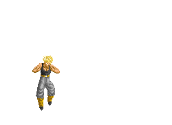

Broly launching a beam blast.>>
Vegeta turns to MajinVegeta.>>
Goku takes care of cell.>>
Back
|
|
<<Super Saiyan Jin Trunks, Vegeta, Goku, and
Gohan. Broly launching a beam blast.>> |
|
|
|
Goku in Kaioken going times 3. Vegeta turns to MajinVegeta.>> |
|
|

|
Trunks using Buster Cannon. Goku takes care of cell.>> |
Back |